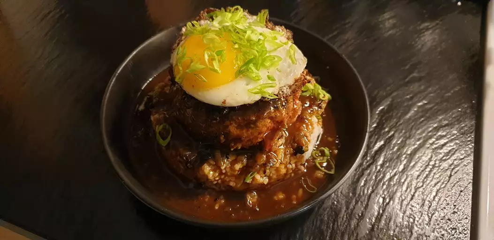

Chef John's Loco Moco

Description
This loco moco is an amazing Hawaiian comfort food classic made by topping rice with a fried burger, which is then smothered with a rich, brown gravy and finished with a fried egg. Seriously, how did it take until 1949 for someone to think of this combination?
Sometimes, we all get hangry, so this cheap, filling bowl of goodness is the perfect solution, whether you're a broke student or an older professional who wishes you were. Garnish with green onions.
Ingredients
- 2 (4 ounce) patties ground beef
- 1 pinch salt and freshly ground black pepper to taste
- 1 pinch cayenne pepper
- 1 ½ cups beef stock
- 4 teaspoons of soy sauce
- 1 teaspoon of Worcestershire sauce
- 4 teaspoons of cornstarch
- 2 teaspoons of ketchup
- 2 drops of sesame oil
- 2 teaspoons of unsalted butter, divided
- 2 tablespoons of minced green onions, but only the white and light green parts
- 2 eggs
- 2 cups of hot cooked white rice
Steps
- Season patties with salt, pepper, and cayenne; set aside.
- Whisk together beef stock, soy sauce, Worcestershire sauce, cornstarch, ketchup, sugar, and sesame oil in a bowl; set aside.
- Melt 1 teaspoon butter in a skillet over medium-high heat. Cook patties in the hot skillet until the bottoms are nicely browned, about 5 minutes. Flip patties; add green onions and cook until both beef and onions are browned, 4 to 5 minutes. Remove patties and most of green onions to a plate.
- Pour beef stock mixture into the skillet. Stir, scraping up browned bits from the bottom, until thickened, about 2 minutes. Reduce heat to low and reserve gravy until needed.
- Melt remaining butter in another skillet over medium heat. Add eggs to the skillet and fry side-by-side until whites are set and yolks are still runny.
- Divide rice between 2 serving bowls. Place patties over rice, spoon gravy on top, and add fried eggs.